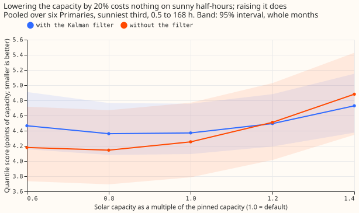
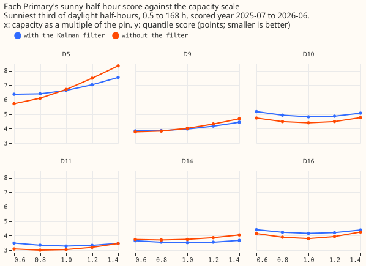
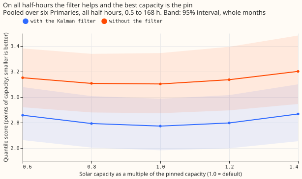
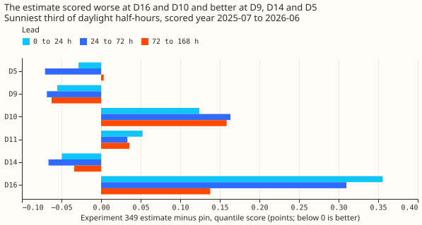
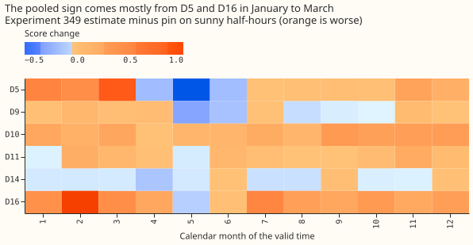

How much does the score of Primary demand research default 3 on sunny half-hours depend on the solar capacity it is given, with and without the Kalman filter?
Take-home message
The sunny-half-hour score of the demand forecast moved by only 0.010 points (interval -0.104 to +0.088) when the assumed solar capacity was 20% too low, but rose by 0.124 points when it was 20% too high, and the Kalman filter halves that rise. The forecast of demand at six Primary substations (anonymised D5, D9, D10, D11, D14, and D16) subtracts the output of unmetered rooftop solar from each substation's demand, and the size of that solar (its capacity) is fixed to the weekly capacity estimates of experiment 45, which this page calls the pin. Experiment 349 and experiment 350 found no reliable gain from a different capacity. We asked how much the score depends on the capacity at all.
We refitted the first stage of Primary demand research default 3 (a convex demand model, with a Kalman filter that corrects the forecast using the latest readings; the later stages add a neural-network head, a summary of the solar term, and a blend with a manual heuristic) five times, with the pinned capacity multiplied by 0.6, 0.8, 1.0, 1.2, and 1.4, and forecast each with and without the filter. The arm at scale 1.0 with the filter (arm A of experiment 349) reproduces experiment 349's stored default exactly. On the sunniest third of each substation's daylight half-hours, with the filter, the quantile score (twice the mean pinball loss over 11 quantiles, in points of the substation's effective capacity, smaller is better) is 4.361 at 0.8, 4.371 at 1.0, and 4.495 at 1.2. Verdict: partly supported (one of the two predictions held). We predicted that, with the filter, the sunny score would differ by under 0.1 points between any two scales from 0.8 to 1.2 (largest minus smallest). That failed: the difference was 0.134 (95% interval 0.054 to 0.321). We also predicted a difference of over 0.3 without the filter. That held: 0.367 (0.129 to 0.614). The curve is flat from 0.8 to 1.0 times the pin and rises above 1.0. The later stages of the stack (neural-network head, solar summary, blend) and the 168 to 240 hour range were not refitted.
Figures
Figure 2: with the filter, the sunny score is flat from 0.8 to 1.0 and rises above 1.0.

Figure 3: D5 and D9 prefer a lower capacity and the other four Primaries prefer the pin.

Figure 4: on all half-hours the filter helps and the pin is the best of the five scales.

Figure 1a: experiment 349's loss came from D16 and D10 at every lead band.

Figure 1b: the loss concentrates in January to March at D5 and D16.

Results
- Arms and schedule. Scale s in {0.6, 0.8, 1.0, 1.2, 1.4} times experiment 45's pinned weekly capacity path, in the first stage of experiment 349's code (the code imports that folder without changing it), with monthly refits on a 24-month window as in that experiment, each arm forecast with the filter and without it (fitted mean plus a spread table fitted on the same arm's tuning months). Every arm uses the same refit dates and training window, so the schedule does not differ between arms.
- Row set.
fold_a_daily_gap_v1, scored year 2025-07-02 to 2026-06-30, six Primaries, rows outside the hand-filtered events, 0.5 to 168 hours (24 to 168 hours inlogs/score.log). - Sunny score, pooled, 0.5 to 168 hours (95% month-resampled intervals in
logs/score.log).
| Scale | With filter | Without filter |
|---|---|---|
| 0.6 | 4.465 | 4.179 |
| 0.8 | 4.361 | 4.144 |
| 1.0 | 4.371 | 4.253 |
| 1.2 | 4.495 | 4.511 |
| 1.4 | 4.728 | 4.881 |
- Planned contrasts, sunny, 0.5 to 168 hours. C1 (filter, 0.8 minus 1.0): -0.010 (-0.104 to +0.088). C2 (filter, 1.2 minus 1.0): +0.124 (+0.030 to +0.219). C3 (no filter, 0.8 minus 1.0): -0.110 (-0.228 to -0.003). C4 (no filter, 1.2 minus 1.0): +0.258 (+0.122 to +0.388). C5 (no filter minus filter at 1.0): -0.118 (-0.451 to +0.191). At 24 to 168 hours: C1 -0.024, C2 +0.130 (+0.032 to +0.232), C3 -0.103, C4 +0.242 (+0.111 to +0.373), C5 -0.186.
- Beyond the planned range. With the filter, 0.6 minus 1.0 is +0.094 (-0.091 to +0.295) and 1.4 minus 1.0 is +0.358 (+0.160 to +0.554). The predicted +0.10 to +0.25 at 0.6 was just missed on the low side, with an interval that includes it.
- By Primary (with the filter, 0.8, 1.0, 1.2). D5 6.410, 6.646, 7.038; D9 3.862, 3.979, 4.178; D10 4.934, 4.818, 4.865; D11 3.338, 3.281, 3.329; D14 3.548, 3.519, 3.548; D16 4.236, 4.161, 4.208. D5 and D9 improve at 0.8, as predicted for D5; the other four are best at the pin. D16 at 0.8 is 0.075 worse, in line with experiment 349's estimate sitting 28% below the pin there and scoring 0.218 worse.
- Leave one Primary out (sunny, with the filter, C2). Without D5: +0.074 (-0.019 to +0.162). Without any other Primary: +0.108 to +0.143, all intervals above zero. The no-filter range falls from 0.367 to 0.179 without D5 and stays 0.342 to 0.441 without any other Primary.
- Experiment 349's contrast (its arm B, which used a different capacity, minus its arm A, the pin), read from stored forecasts. Pooled +0.047, as in experiment 349. By lead band: +0.067 (0 to 24 h), +0.051 (24 to 72 h), +0.040 (72 to 168 h). By Primary: D16 +0.356, +0.310, +0.138 across the three bands, D10 +0.12 to +0.16 everywhere, D11 about +0.04, and D5, D9, and D14 negative (-0.03 to -0.07) at short leads. By month the loss concentrates in January to March (+0.15 to +0.29) and the gain in May (-0.145). Figures 1a and 1b show the cells.
- No-harm groups, 0.5 to 168 hours, with the filter. All half-hours: 2.858, 2.793, 2.773, 2.797, and 2.868 at scales 0.6 to 1.4, so the pin is the best scale of the five; C1 +0.020 (+0.004 to +0.036), C2 +0.025 (+0.003 to +0.049). Removing the filter at the pin worsens the score by +0.330 (+0.181 to +0.484) on all half-hours and +0.509 (-0.159 to +1.030) on winter nights.
- Tails, all rows, at scale 1.0 (filter, then no filter). Coverage below q01 2.20% and 1.10%; below q05 6.68% and 3.81%; below q95 94.74% and 85.90%; below q99 98.35% and 94.04%. Pinball loss at q95 0.720 and 0.902, at q99 0.220 and 0.316. Across scales with the filter no tail moves by more than 0.03 points. Without the filter the upper tail is under-covered, so the no-filter arm's better sunny score does not carry to the tails.
- Reference rows. The first stage alone is not the research default, so no manual-heuristic or climatology row is given; the default's own scores are in the research default log. The experiment changes no production behaviour, so no curtailment-cost row is given.
- Model family and range. One model family, no blend, first stage only, 0.5 to 168 hours, which covers 7 of the 10 forecast days that National Grid Electricity Distribution (NGED), the distribution network operator, needs.
Checks
- Reproduction gate. Scale 1.0 with the filter equals experiment 349's stored arm A in every
period at all six Primaries (largest gap 0.0 in q01, q05, q25, q50, q75, q95, q99, mean, and
actual;
logs/gate.log). - Median minus mean forecast, per Primary and arm: 0.000 for all ten arms.
- Mean-forecast error beside each contrast (sunny, 0.5 to 168 hours): C1 +0.008, C2 +0.205, C3 -0.139, C4 +0.406, C5 -0.298, the same signs as the quantile score except C1, where both values are within 0.01 of zero.
- Triggers. Trigger 2 (a result contradicts its prediction) fired: the with-filter range (0.134) missed the prediction (under 0.1). The explanation, tested by the leave-one-out run and the audit, is that D5's export limit gives D5 a steep response; without D5 the with-filter range is 0.074. Trigger 4 (leaving one site out flips a contrast) fired: leaving D5 out moves C2's interval from above zero to across zero, and the no-filter range from 0.367 to 0.179, which changes which planned conditions hold. The audit confirmed this (next section). Trigger 5 (a nested arm beating the arm that contains it) did not fire as a failure: the no-filter arm scores 0.118 better on sunny half-hours at the pin, but the interval includes zero, and the filter wins on all half-hours.
Audit
A fresh Sonnet auditor (the brief limited the session to Sonnet; the audit rule names Opus) re-derived the headline numbers from the stored forecasts with its own code. Each finding is triaged here.
- Pooled sunny scores reproduce to three decimals (accepted).
- Pin scaling, fit dates, spread fitting, and leakage checks passed (accepted). The scale multiplies the weekly path and the held value, the fits and the prediction use the same scaled capacity, and no fit sees data past its cut.
- The no-filter arm's better sunny score is a real mechanism, with caveats (accepted). On sunny rows the filter adds about 2.1 points to the forecast at every lead. The filter helps up to 24 hours (sunny score 3.53 against 3.82 without it) and hurts at 72 to 168 hours (4.75 against 4.47). C5's interval includes zero (-0.118, -0.451 to +0.191), so the sentence "no filter is better on sunny half-hours" is not supported.
- The verdict depends on D5 (accepted). With D5 the rule gives
partly supported. Without D5, C1 (+0.031, -0.055 to +0.130) and C2 (+0.074, -0.019 to +0.162) both reach the upper edge of the planned band, and the no-filter range falls to 0.179, which would read asinconclusive. C1's lower edge with D5 (-0.104) is also just outside the band. The verdict word stays as pre-registered, and the headline carries the leave-out-D5 numbers. - D5's export limit explains most of its steepness (accepted, not measured directly). The fit has no clip, and D5's error at the top decile of the solar shape grows almost linearly with scale (+9.2, +13.7, and +18.3 points at 0.8, 1.0, and 1.2), which a saturated output produces. The clip level itself was not tested.
Caveats
- First stage only. The neural-network head, solar summary, and blend were not refitted, so a response that the later stages create or remove is not measured.
- Scale multiplies the pin at every week. It does not change the unit shape or the pin's growth path, so it tests the level and not the shape of the solar term.
- 12 months to resample. Intervals resample the 12 calendar months of one year, so they are wide and the ranking of arms inside 0.1 points is not resolved.
- Heterogeneity. The pooled curve mixes D5 and D9, which prefer a lower capacity, with four Primaries that prefer the pin.
What to try next
- Keep the pin for the demand stack and do not spend effort on a more exact capacity inside 0.8 to 1.0 times the pin; the harm is above the pin.
- If a capacity estimate is used, test capping it at the pin, because the harm sits above the pin.
- Test whether a per-Primary export clip at D5 and D9 removes their preference for a lower capacity.